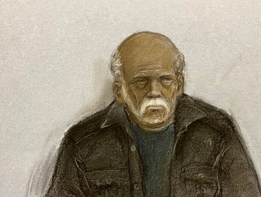

Detectives caught a 92-year-old man who it is alleged murdered and raped a woman in her home almost six decades ago after advances in DNA techniques led them to the suspect, a jury has been told.
An extensive police operation was launched in Bristol in the summer of 1967 after the death of mother of two Louisa Dunne, 75, but her killer could not be found, a jury at the city’s crown court heard.
Evidence relating to the case was stored and last year a DNA match was allegedly made between material found at the murder scene and a man named Ryland Headley, the court was told. Headley, from Ipswich, Suffolk, denies murder and rape.
In the prosecution’s opening, Anna Vigars KC said police had never given up finding the killer.
She said: “What we are talking about is the murder of an elderly and vulnerable lady in her own home. She was in no state to defend herself.
“Whether it happened 58 years ago or 58 days ago, the murder of any person is a matter of concern to the rest of us. The fact that time has passed doesn’t make the killing of any one of us any less significant.”
The jury heard that soon after the murder, Headley moved to Suffolk, where in 1977 he raped two women, threatening to strangle or smother them if they did not follow his orders.
Court artist’s drawing of 92-year-old Ryland Headley appearing via video link at Bristol magistrates court last November.Photograph: Elizabeth Cook/PA
Vigars said Dunne had been born in May 1892, when Queen Victoria was on the UK throne and by 1967 was living alone in Britannia Road, Easton, Bristol. She had been married twice, to a city alderman and to a nightwatchman, but both had died.
Neighbours knew her as “a local fixture”, always out on her doorstep, watching the world go by.
On 28 June 1967, a number of local women became worried about Dunne after noticing that one of her windows was open. A neighbour, Violet Allen, climbed in and found her dead.
A postmortem was performed. Dunne was 5ft 3in tall and weighed less than seven stone (45kg). She was wearing three cardigans and a blue skirt.
She had abrasions to her face and bruises to the back of the head and her right thigh. The pathologist concluded a hand had been forcibly held over her mouth, and that a bruise across the back of her neck had been caused by a scarf found under her body having been violently tightened. A vaginal swab taken from her tested positive for semen.
Police found a palm print on a window at the back of the house and over the following weeks took thousands of prints from men and boys but could not find a match.
Vigars told the jury that though semen had been found, DNA examination was “not a technique in the armoury” of the police at that time.
The material gathered in the investigation was boxed and preserved, latterly at the major crime archives at Avon and Somerset police headquarters. The case was looked at from time to time and in 2024 items including the blue skirt Dunne had been wearing were sent off for forensic examination.
Vigars said: “Although the items had been in police possession for almost 60 years, they had never before been examined scientifically like this.”
The jury was told forensic scientist Andrew Parry discovered that Dunne’s skirt contained “a large quantity of semen”.
Vigars said: “By 2024, scientists were able to do what was impossible nearly 60 years earlier and examine that semen for DNA. Mr Parry discovered that the semen matched Mr Headley’s DNA with a match ratio that meant it was a billion times more likely to be Mr Headley’s DNA than anybody else’s.”
Police found voters’ records from the late 1960s showing that Headley and his wife lived in Picton Street, Bristol, about a mile and a half from Dunne’s home. Vigars said: “Picton Street fell outside the ring of homes where men had been asked to provide a palm print.”
The jury heard that in 1977 Headley raped two women, one aged 84, one 79, in Suffolk, where he had moved soon after Dunne’s death, after breaking into their homes.
He threatened to strangle the 84-year-old if she did not do what he ordered, the court heard. Headley told the 79-year-old he had a gun and warned her that, if she did not follow his instructions: “I’ll put a pillow over your face and smother you.”
He admitted both rapes and asked for a further 10 offences of overnight burglaries of homes where his fingerprints had been found between 1973 and 1978 to be taken into consideration.
After his arrest for Dunne’s murder and rape, his palm print was taken – and experts said it matched the one taken at her home in 1967.
The trial continues.